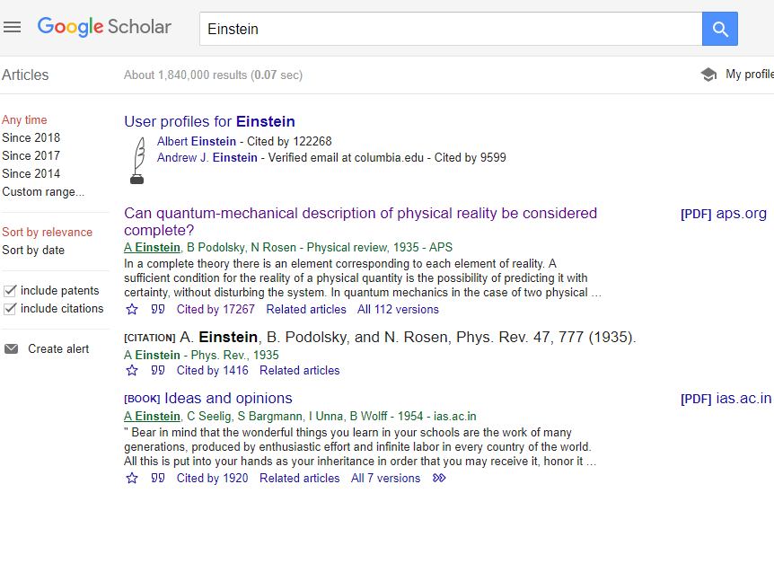
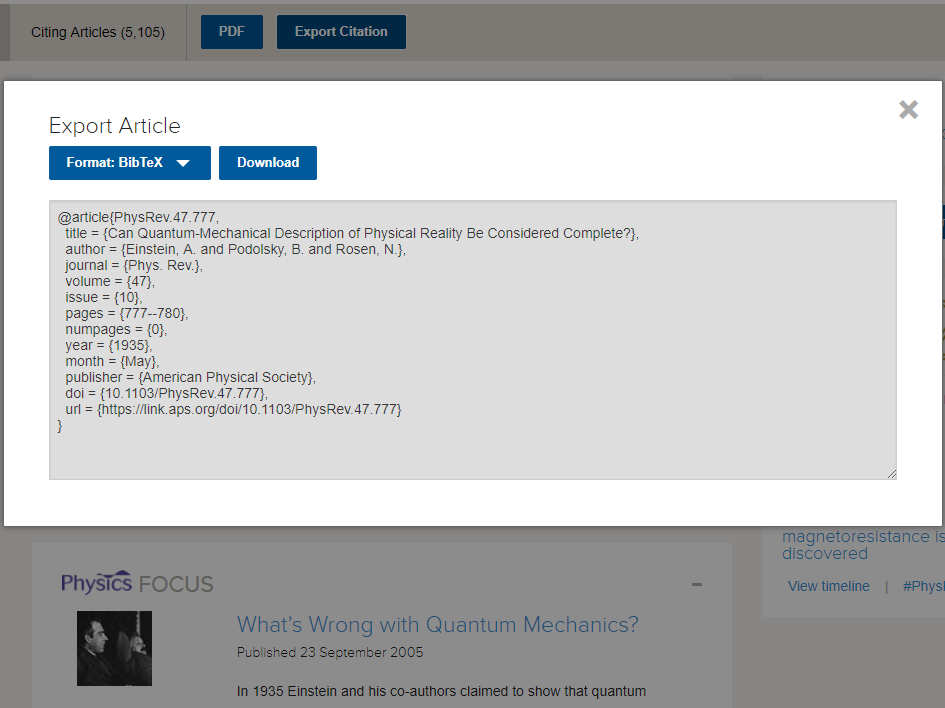
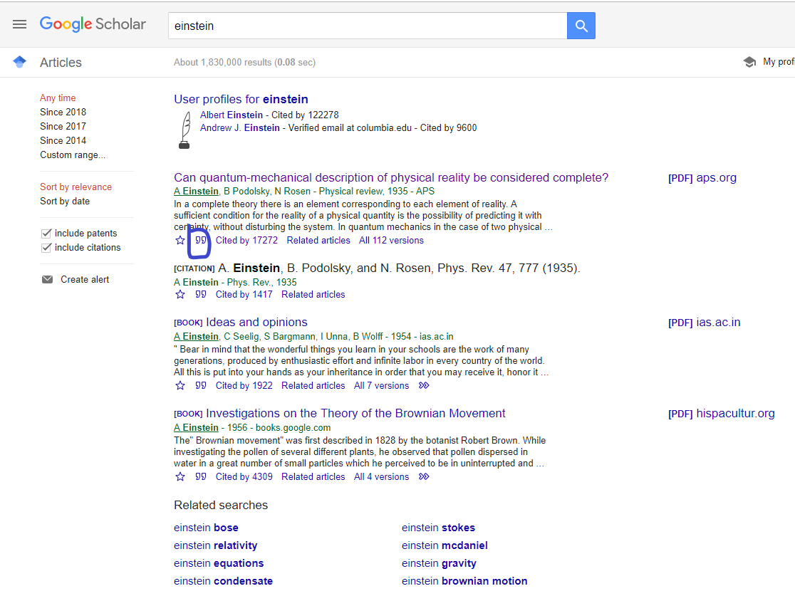
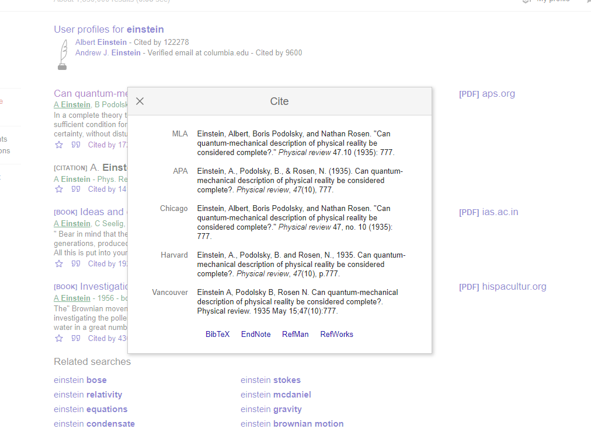
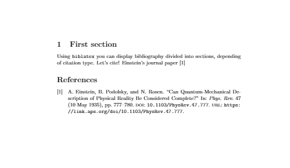

Bibliography management in LaTeX
To construct bibliography for your Latex document, there are several packages that could be deployed and used. Biblatex is one powerful package that can helps you.Content
- Bibliography file
- Introduction and the basic
- Customization
- Adding Bibliography to the table of contents
- Reference guide
Bibliography file (.bibtex)
To initiate a bibliorgraphy in Latex, you must first create a .bibtex file. A .bibtex file is a text file that contains the citation that you want to cite in your document. You can also use any text editor, such as sublime, atom, or TexMaker to make your own Bibtex file. In this example, we're going to use a .bibtex file by downloading a citation from google scholar.
-
Come to google scholar and search for Einstein paper:
Can quantum-mechanical description of physical reality be considered complete?

-
Click on the link, you see the export citation button. Click on that button, you will see Export Article to BibTex. In general, this is how you look for BibTex citation for any research paper. Google Scholar is your friend.
-
Download the file as bibtex to the same folder of your latex file. The file will have the name:
PhysRev.47.777.bibtex
Keep the file name consistent with the file name that you are importing to your latex file.

-
Another way to do this is to download the cite directly from google scholar. You can press the double quote below the link from google scholar:

-
When you click the double quote, google scholar will show you several citing styleswith the citing file format at the bottom.

Introduction and the basics
To make biblatex work, you're required to include these 4 commands:
-
Import biblatex package
\usepackage{biblatex}
-
Imports the bibtex data file sample.bib, this file is the one that includes information about each referenced book, article, etc.
\addbibresource{PhysRev.47.777.bibtex}
-
This command inserts a reference within the document, [1] in this case, that corresponds to an element in the bibliography, "einstein" is a keyword corresponding to an entry in sample.bib.
\cite{PhysRev.47.777}
-
Prints the list of cited references, the default title is "References" for the article document class and "Bibliography" for books and reports.
\printbibliography
This is the input of your latex file
\documentclass{article}
\usepackage[utf8]{inputenc}
\usepackage[english]{babel}
\usepackage{biblatex}
\addbibresource{PhysRev.47.777.bibtex}
\begin{document}
\section{First section}
Using \texttt{biblatex} you can display bibliography
divided into sections, depending of citation type.
Let's cite! Einstein's journal paper
\cite{PhysRev.47.777}
\printbibliography
\end{document}
And this is the out put:

Customization
Bibtex citing can be easily customized through a few command. In this section, we will add some more source into our Bibtex file, and we will let Biblatex handle sorting and citing.
\printbibliography[title={Whole bibliography}]
This command will change the title of the bibliography from "References" to which ever title you put there.
\printbibliography[type=article,title={Articles only}]
\printbibliography[type=book,title={Books only}]
\printbibliography[keyword={physics},title={Physics-related only}]
\printbibliography[keyword={latex},title={\LaTeX-related only}]
Here are a few more commands that could be very useful:
\printbibliography[type=article,title={Articles only}]
Only prints entries whose type is "article", and sets the title "Articles only" for this section. The same syntax works for any other entry type.
\printbibliography[keyword={physics},title={Physics-related only}]
Filters bibliography entries that include the word "physics" in any of the fields. Sets the title "Physics-related only" for said section.
Adding Bibliography to the table of contents
In \printbibliography you need to add heading option into the command. You can make your heading into bibintoc or subbibintoc, as bibintoc is the option for the main section and subbibintoc is the subsection of the bibliorgraphy
\printbibliography[
heading=bibintoc,
title={Whole bibliography}
]
\printbibliography[heading=subbibintoc,type=article,title={Articles only}]